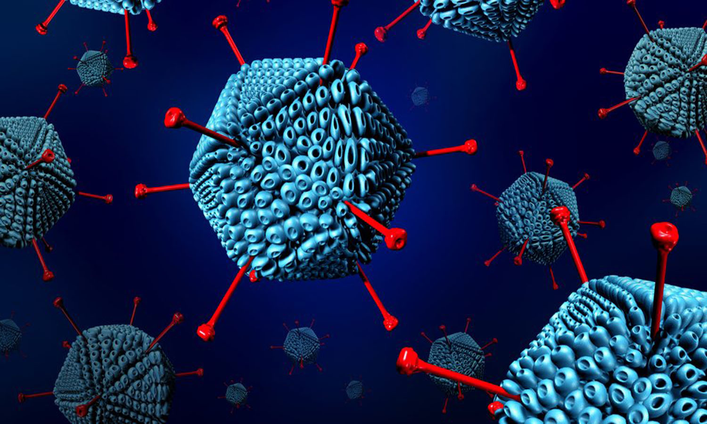
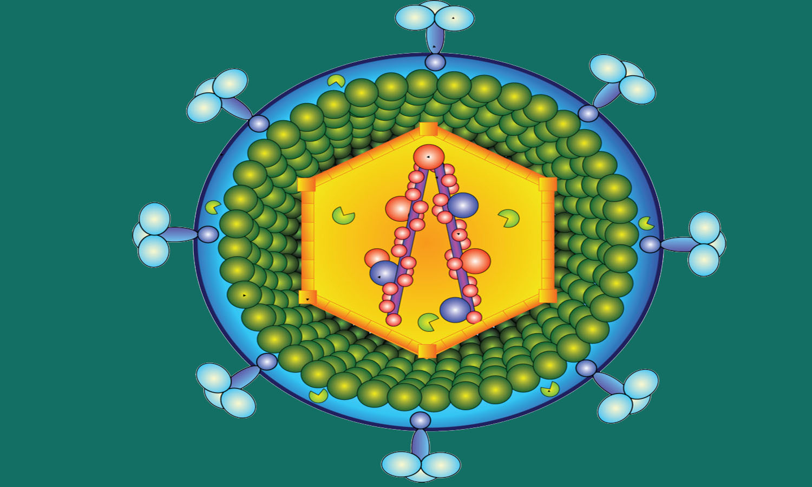
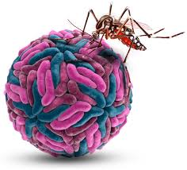
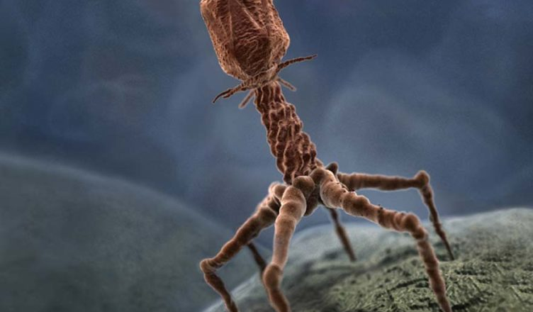

Um grupo de vírus que costumam causam doenças respiratórias, como um resfriado comum, a conjuntivite, crupe, bronquite ou pneumonia.
Fonte: Hospital Infantil Sabara
Uma família de vírus que possuem genoma constituído por RNA fita simples senso positivo e que replicam o RNA viral por meio de um processo denominado transcrição reversa, onde moléculas de DNA dupla fita (dsDNA) são geradas a partir de RNA, pela ação da enzima transcriptase reversa. A SIDA (ou AIDS) é uma doença causada pelo retrovírus HIV, Os retrovírus HTLV-1 e HTLV-2, sendo o primeiro é responsável pela ocorrência de algumas doenças como o linfoma das células T, já o segundo retrovírus citado, não há até o momento, ligação com alguma patologia determinada.
Fonte: Viral Zone
Termo usado para um vírus que se transmite aos humanos através dos insetos (mosquitos), os quais se contagiam ao picar animais infectados, como os animais silvestres e pássaros domésticos, como a dengue.
Fonte: Portal Educação
Vírus que infectam bactérias, reproduzindo-se em seu interior. Vírus são patógenos, isto é, partículas infecciosas, constituídos basicamente de um ácido nucleico circundado por uma cápsula proteica, denominada de capsídeo. Em alguns casos, podem apresentar também um envelope membranoso.
Fonte: Biologia Net
Animal que se alimenta principalmente ou somente de membros do reino Fungi. A fungivoria é um tipo de predação, e é uma parte importante da rede alimentar do solo.
Fonte: UFRGS